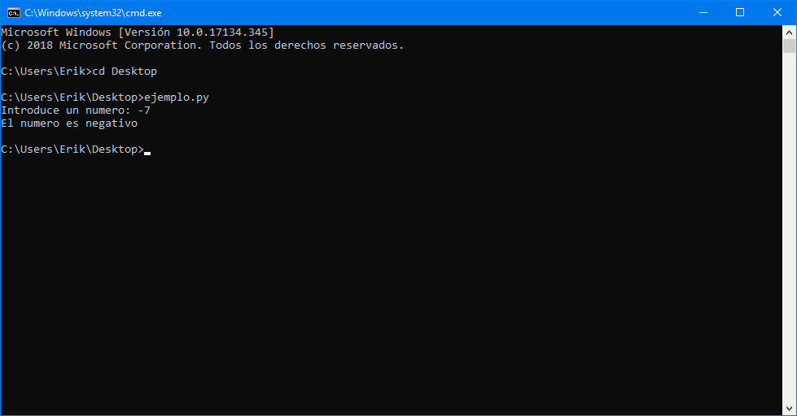
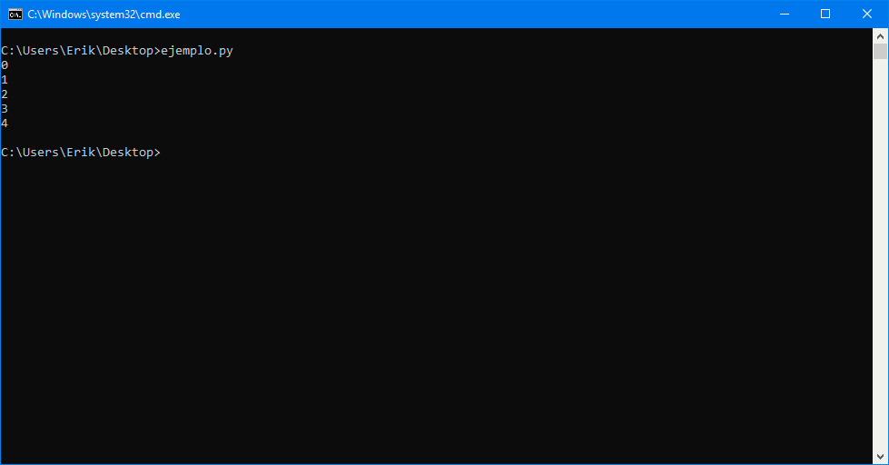
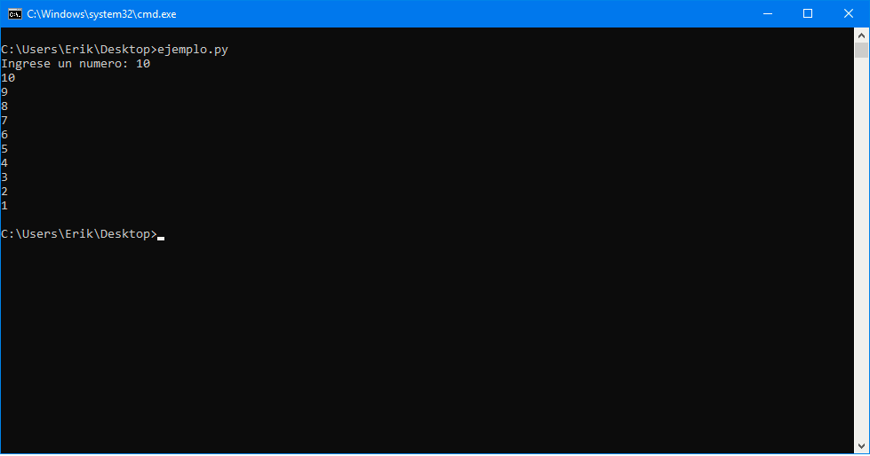
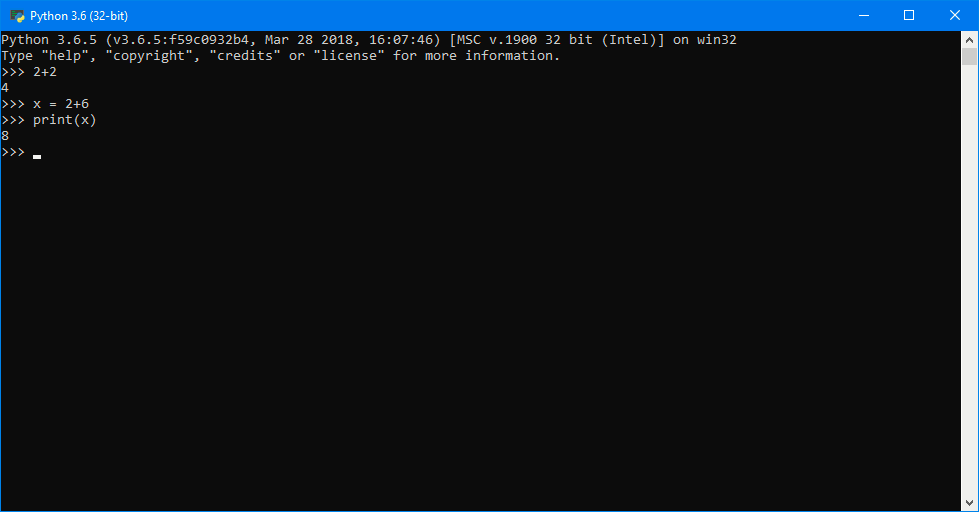
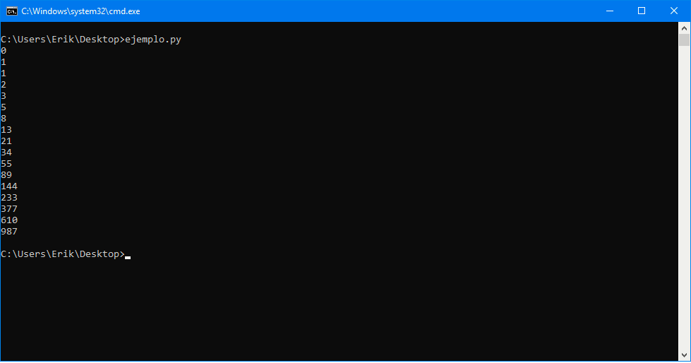

Lenguaje Python
Python es un lenguaje de programación interpretado, multiparadigma, ya que soporta programación orientada a objetos, programación imperativa y programación funcional. Este lenguaje tiene una sintaxis que facilita un código legible. Es administrado por la Python Software Foundation y es de código abierto.
Introducción a Python
Símbolos
Los operadores de Python son como en la mayoria de los lenguajes de programación:
- Suma: +
- Resta: -
- Multiplicación: *
- División: /
- División entera (descarta la parte fraccionaria): //
- División residual (devuelve el residuo): %
- Potencia: **
- Asignación: =
También se puede usar parentesis para agrupar: (2+3)/(4*2)
Un string puede ser expresado usando comillas simples ('...') o comillas dobles ("...") teniendo el mismo resultado.Si dentro del string hay una comilla se puede usar "\" para saltarla. Ejemplo:
>>> 'doesn\'t' # use \' to escape the single quote...
"doesn't"
Los strings se pueden concatenar (con el signo +) y repetidas (con el signo *). También, si dos strings se escriben uno al lado del otro, se concatenan automaticamente:
>>> 'Py' 'thon'
'Python'
Esto es util cuando se tienen strings muy largos, lo cual facilita la lectura y la escritura del mismo en el codigo
Variables
No es necesario declarar el tipo de dato que guardará la variable. Tampoco es necesario declarar la variable (como en C o JAVA), solo se asigna. Ejemplo:
>>> numero = 2
>>> print(numero)
2
>>> numero = 2 + 2
>>> print(numero)
4
>>>
Sentencias de control
If - else, elif
En Python, se utiliza la sentencia if de la siguiente manera:
numero = int(input("Introduce un numero: "))
if numero < 0:
print("El numero es negativo")
elif numero == 0:
print("El numero es un cero")
else:
print("El numero es positivo")

For
La sentencia "for" se utiliza de manera diferente que en C o JAVA. Se utiliza de manera similar a Ruby o a la intrucción "foreach" de lenguajes como C#
for numero in range(5):
print(numero)

While
La sentencia while es similar a la mayoria de los lenguajes de programación
numero = int(input("Ingrese un numero: "))
while numero > 0:
print(numero)
numero = numero - 1

NOTA: La INDETACION es muy importante en Python. Sirve para definir los bloques de codigo, así como lo que hacen las llaves en C.
Para mas información, lea la documentación de Python.
Descargando Python
Python está disponible para las tres principales plataformas: Windows, GNU/Linux y MacOS/MacOS X.
Es necesario ir al centro de descargas de Python y descargar una de las versiones. Hay que saber cual versión utilizamos, porque si se presentan cambios.
En GNU/Linux ya viene integrado, pero probablemente no sea la versión más actualizada.
¿Qué editor de texto/IDE se puede utilizar?
En realidad se puede utilizar cualquier editor de texto plano (incluso bloc de notas de Windows), pero se puede optar por algo más serio como NINJA-IDE, que es un entorno de desarrollo exclusivo para Python.
Python también incluye un interprete en vivo, que permite escribir ordenes y ver los resultados en ese momento.
Un ejemplo de un programa en Python
# Python 3: Fibonacci series up to n def fib(n): a, b = 0, 1 while a < n: print(a, end=' ') a, b = b, a+b print() fib(1000)
Este pequeño programa fue tomado del sitio de Python.
